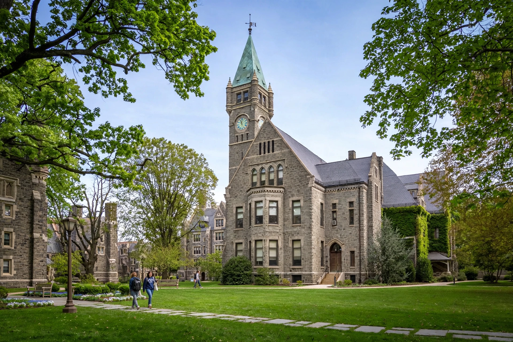

 Taylor Hall, Bryn Mawr College | |
| Motto | Veritatem Dilexi ("I have loved the truth") |
|---|---|
| Type | Private liberal arts women's college |
| Established | 1885 |
| Location | Bryn Mawr, Pennsylvania, U.S. |
| Undergraduates | c. 1,400 |
| Postgraduates | c. 300 |
| Campus | Suburban, 135 acres (55 ha) |
| Colours | Black and gold |
| Affiliations | Seven Sisters; Tri-College Consortium |
Bryn Mawr College (Welsh for "big hill") is a private women's liberal arts college in Bryn Mawr, Pennsylvania, United States. Founded in 1885 by Quakers, it was one of the first institutions in the United States to offer graduate education through the PhD to women. It is a member of the Seven Sisters colleges and part of the Tri-College Consortium with Haverford College and Swarthmore College.
The college was founded with a bequest from Joseph W. Taylor, a Quaker physician and businessman, and opened in 1885. Its first dean and second president was M. Carey Thomas, who set rigorous academic standards modelled on Johns Hopkins University and insisted that women meet the same entrance and degree requirements as men elsewhere. Bryn Mawr was the first women's college in the United States to offer graduate degrees including the doctorate.
The campus's Collegiate Gothic architecture, including the Thomas Great Hall and its cloisters, and its landscape — planned in part with Frederick Law Olmsted's firm — are celebrated, and the campus is listed as a historic district.
Bryn Mawr offers undergraduate degrees across the humanities, sciences, and social sciences, and graduate programs through its Graduate School of Arts and Sciences and Graduate School of Social Work and Social Research. It has a close course-sharing relationship (the "Bi-Co") with Haverford College. The college is known for its honour code, administered by students, and traditions including May Day and Lantern Night.